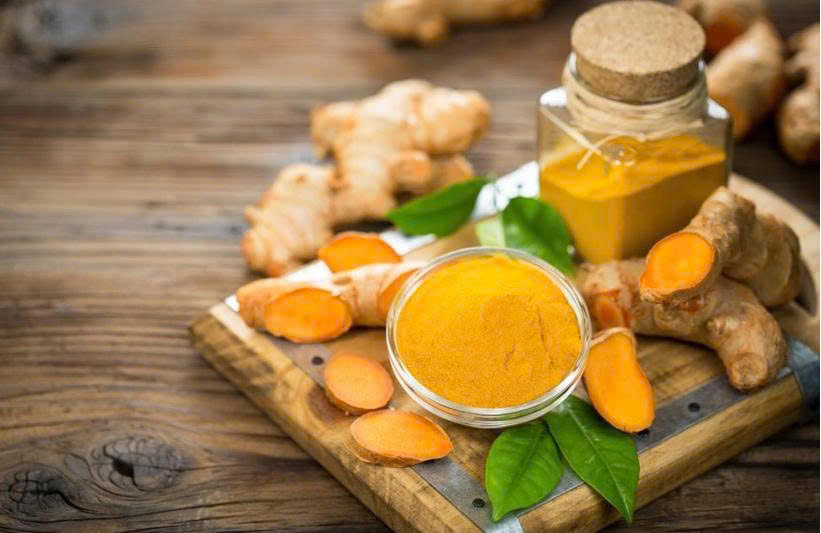

Tinh Bột Nghệ Nguyên Chất
Thành phần hoàn toàn từ củ nghệ (Curcuma longa) từ củ nghệ tươi vàng Trà My, Quảng Nam. Sản phẩm tự nhiên, không chất bảo quản, không phẩm màu, không chất tăng hợp.
Thông tin sản phẩm
- Tên sản phẩm: Tinh Bột Nghệ Nguyên Chất
- Thành phần: 100% Tinh bột nghệ (Curcuma longa) từ củ nghệ tươi vàng Trà My, Quảng Nam
- Khối lượng tịnh: 150g
- Cam kết: 100% Sản phẩm tự nhiên - Không chất bảo quản - Không sản phẩm màu - Không chất tăng hợp
- Bảo quản: Đậy kín nắp, để nơi khô ráo, thoáng mát. Tránh ánh nắng trực tiếp và nơi ẩm thấp
- HSD: 12 tháng kể từ ngày sản xuất
- Xuất xứ: Trà My, Quảng Nam